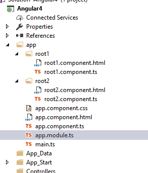

Angular4 Routing on VS 2017
This article will show how to configure Angular 4 Routing on an ASP.Net MVC web application
STEP 1 - Make sure you have installed the prerequisites
Without these requisites, application will not run.
- Visual Studio 2017
- TypeScript 2.0 for Visual Studio 2017
STEP 2 - Create ASP.NET MVC Web Application
Go to Visual Studio’s File New Project menu, expand the Web category, and pick ASP.NET Web Application like on the image below

Select the template MVC:

STEP 3 - Configure Angular 4
We need now to prepare our frontend to run Angular 4
- Create tsconfig.json which is the TypeScript compiler configuration file.
{ "compilerOptions": { "target": "es5", "module": "commonjs", "moduleResolution": "node", "sourceMap": true, "emitDecoratorMetadata": true, "experimentalDecorators": true, "lib": [ "es2015", "dom" ], "noImplicitAny": true, "suppressImplicitAnyIndexErrors": true } }
- Add package.json file to your project folder with the below code:
The most important things in your package.json are the name and version fields. Those are actually required, and your package won't install without them. The name and version together form an identifier that is assumed to be completely unique. Changes to the package should come along with changes to the version.
{ "name": "angular-quickstart", "version": "1.0.0", "description": "QuickStart package.json from the documentation for visual studio 2017 & WebApi", "scripts": { "start": "tsc && concurrently \"tsc -w\" \"lite-server\" ", "lint": "tslint ./app/**/*.ts -t verbose", "lite": "lite-server", "pree2e": "webdriver-manager update", "test": "tsc && concurrently \"tsc -w\" \"karma start karma.conf.js\"", "test-once": "tsc && karma start karma.conf.js --single-run", "tsc": "tsc", "tsc:w": "tsc -w" }, "keywords": [], "author": "", "license": "MIT", "dependencies": { "@angular/common": "4.0.2", "@angular/compiler": "4.0.2", "@angular/core": "4.0.2", "@angular/forms": "4.0.2", "@angular/http": "4.0.2", "@angular/platform-browser": "4.0.2", "@angular/platform-browser-dynamic": "4.0.2", "@angular/router": "4.0.2", "angular-in-memory-web-api": "~0.2.4", "systemjs": "0.19.40", "core-js": "^2.4.1", "rxjs": "5.0.1", "zone.js": "^0.7.4" }, "devDependencies": { "concurrently": "^3.2.0", "lite-server": "^2.2.2", "typescript": "~2.0.10", "canonical-path": "0.0.2", "tslint": "^3.15.1", "lodash": "^4.16.4", "jasmine-core": "~2.4.1", "karma": "^1.3.0", "karma-chrome-launcher": "^2.0.0", "karma-cli": "^1.0.1", "karma-jasmine": "^1.0.2", "karma-jasmine-html-reporter": "^0.2.2", "protractor": "~4.0.14", "rimraf": "^2.5.4", "@types/node": "^6.0.46", "@types/jasmine": "2.5.36" }, "repository": {} }
- Create a sub-folder app on the root folder. On this folder we need to create our typescript files:
- main.ts
- app.module.ts
- app.component.ts
- app.component.html
- need to create also components to each route we need. On this example we need to create two components Roo1Component and Root2Component that must be declares on app.module.ts
- Create your index.html file like showing below:
<!DOCTYPE html> <html> <head> <script>document.write('<base href="' + document.location + '" />');</script> <title>Angular4 Routing</title> <base href="/"> <meta charset="UTF-8"> <meta name="viewport" content="width=device-width, initial-scale=1"> <base href="/"> <link rel="stylesheet" href="styles.css"> <!-- load bootstrap 3 styles --> <link href="https://maxcdn.bootstrapcdn.com/bootstrap/3.3.6/css/bootstrap.min.css" rel="stylesheet"> <!-- Polyfill(s) for older browsers --> <script src="node_modules/core-js/client/shim.min.js"></script> <script src="node_modules/zone.js/dist/zone.js"></script> <script src="node_modules/systemjs/dist/system.src.js"></script> <script src="systemjs.config.js"></script> <script> System.import('app/main.js').catch(function (err) { console.error(err); }); </script> </head> <body> <my-app>Loading App</my-app> </body> </html>
STEP 5 - Run application


Resources
Angular4: https://code.msdn.microsoft.com/Angular4-Routing-on-VS-2017-55beea8b/https://angular.io/
My personal blog: http://joaoeduardosousa.wordpress.com/